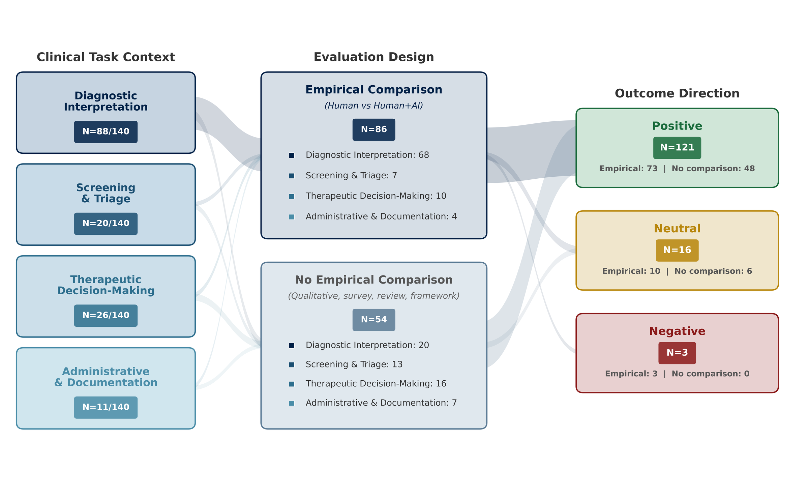

Scoping review · Human–AI collaboration
Human-AI Collaboration in Healthcare: A Scoping Review
An accurate AI model is only the starting point. What matters is whether clinicians can actually use it — and whether patients are better off when they do.
npj Digital Medicine, 9, article 768 · · Open access

Figure 2. Mapping the evidence. Follow the studies from their clinical task, through their evaluation design, to the direction of their reported outcomes. Clinical task categories overlap, and the outcome counts describe individual studies rather than a pooled estimate of how effective human–AI collaboration is.
Reproduced from Strong et al. (2026), Figure 2, under CC BY 4.0. Displayed at reduced resolution for the web. Open the full-size figure ↗
The question behind the review
There's no shortage of AI tools in healthcare. What's harder to find is clear evidence about what happens when a clinician actually sits down with one. Does the radiologist catch more cancers? Does the surgeon plan a better approach? Does the patient notice any difference at all?
This review set out to map what the research says. Not just whether AI systems are accurate, but how they're being used, what makes the collaboration work, and where the evidence runs thin.
What the review found
- The task shapes everything. Better diagnostic accuracy, faster triage, less documentation burden — these are different goals with different measures. No single metric can capture them all, and many studies didn't try to.
- Context matters as much as capability. Studies that reported benefits tended to pay attention to how the tool fitted into existing workflows, whether clinicians were trained to use it, and whether their trust in it was well-calibrated. Strip any of those away and performance gains often shrank or disappeared.
- Patient outcomes were rarely measured. Most studies focused on short-term task performance — did the clinician get the right answer? Far fewer tracked what happened to the patient afterwards. Accountability and safety came up often in discussion sections but were seldom tested directly.
Studies could cover more than one task, so the counts overlap. Redrawn from the paper's Results; bar lengths show study counts, not effectiveness.
How the evidence was gathered
The team searched five databases for English-language research published between January 2015 and October 2025. Two reviewers independently screened titles, abstracts and full texts, resolving disagreements by discussion. The review followed Joanna Briggs Institute scoping review methods and PRISMA-ScR reporting guidance.
A scoping review maps the landscape of a topic — it doesn't pool effect sizes or assign risk-of-bias grades. The goal was to see what kinds of studies exist, where they agree, and where the gaps are.
What this means
The headline take-away is simple: evaluate the whole collaboration, not just the model. An AI system that performs well on a test set can still fail in practice if clinicians don't trust it, if it doesn't fit the workflow, or if nobody measures what happens to patients.
That sounds obvious, but the literature shows it isn't standard practice yet. Most evaluations stop at task-level accuracy. Fewer connect model performance to clinician behaviour, and fewer still follow the chain all the way to patient outcomes. Closing those gaps is where the field needs to go next.
Our plain-language interpretation of the paper's Discussion. A scoping review maps the literature; it does not establish a single overall effect of AI assistance.
Behind the paper
Q&A with the author
Joshua Strong on why the team brought this evidence together and what healthcare teams can take from it.
What motivated this review?
Human–AI collaboration is a rapidly growing field, with increasing importance in healthcare as AI systems become more capable. Yet the research is quite fragmented, spread across different disciplines, clinical settings and approaches to collaboration.
We wanted to bring those strands together and take stock of what the existing work could tell us. By identifying recurring lessons and gaps in the evidence, we hoped to provide a clearer foundation for researchers and healthcare teams as the field develops.
Which findings surprised you most?
To be honest, the broad findings were largely what we expected. The value was in bringing the evidence together and seeing how those expectations held up across the literature.
Having research to support those ideas gives us a firmer basis for discussing what good collaboration requires. It also helps us identify the questions that still need to be investigated.
What should healthcare teams do next?
When working with AI, focus on the human! AI is introduced into a healthcare system with people, routines and responsibilities already in place, so its value depends on how it fits into that setting.
We need to look beyond system accuracy and consider the clinicians using it, the care pathway, and the governance around it. How are its outputs understood and used? Who remains accountable? What changes for patients? Evaluating the whole collaboration means accounting for all of these factors together.
Have a question of your own? Email Joshua about this paper.
Read and cite
Strong, J., Rogers, H., Sun, E. et al. Human-AI Collaboration in Healthcare: A Scoping Review. npj Digital Medicine 9, 768 (2026). https://doi.org/10.1038/s41746-026-02918-6
Publisher article · Full paper (PDF) · Google Scholar
The study explainer summarises the paper; the interview contains the author's responses. The study is open access under CC BY 4.0.